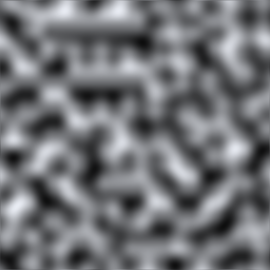

| x | 采样点的 X 坐标。 |
| y | 采样点的 Y 坐标。 |
float 介于 0.0 与 1.0 之间的值。（返回值可能会稍微低于 0.0 或超过 1.0。）
生成 2D 柏林噪声。
柏林噪声是在 2D 平面上生成的浮点值的伪随机图案（虽然
该方法普及到三维或更高维，不过未在 Unity 中实现）。
该噪声不包含每个点处的完全随机值，而是由
“波”组成，其值在图案中逐渐增大和减小。该噪声可以
用作纹理特效的基础，以及用于动画、生成地形高度贴图
和许多其他内容。
\
在范围 0..10 内采样的柏林噪声（灰度值表示 0..1 范围内的值）
可以通过传递相应的 X 和 Y 坐标，对平面中的任何点进行采样。
相同坐标始终返回相同采样值，但是平面本质上无穷大，
因此可通过选择随机区域进行采样以便避免重复。
using UnityEngine; using System.Collections;
// Create a texture and fill it with Perlin noise. // Try varying the xOrg, yOrg and scale values in the inspector // while in Play mode to see the effect they have on the noise.
public class ExampleScript : MonoBehaviour { // Width and height of the texture in pixels. public int pixWidth; public int pixHeight;
// The origin of the sampled area in the plane. public float xOrg; public float yOrg;
// The number of cycles of the basic noise pattern that are repeated // over the width and height of the texture. public float scale = 1.0F;
private Texture2D noiseTex; private Color[] pix; private Renderer rend;
void Start() { rend = GetComponent<Renderer>();
// Set up the texture and a Color array to hold pixels during processing. noiseTex = new Texture2D(pixWidth, pixHeight); pix = new Color[noiseTex.width * noiseTex.height]; rend.material.mainTexture = noiseTex; }
void CalcNoise() { // For each pixel in the texture... float y = 0.0F;
while (y < noiseTex.height) { float x = 0.0F; while (x < noiseTex.width) { float xCoord = xOrg + x / noiseTex.width * scale; float yCoord = yOrg + y / noiseTex.height * scale; float sample = Mathf.PerlinNoise(xCoord, yCoord); pix[(int)y * noiseTex.width + (int)x] = new Color(sample, sample, sample); x++; } y++; }
// Copy the pixel data to the texture and load it into the GPU. noiseTex.SetPixels(pix); noiseTex.Apply(); }
void Update() { CalcNoise(); } }
虽然噪声平面是二维的，但是可方便地通过图案 仅使用单条一维线（例如用于动画特效）。
using UnityEngine;
public class Example : MonoBehaviour { // "Bobbing" animation from 1D Perlin noise.
// Range over which height varies. float heightScale = 1.0f;
// Distance covered per second along X axis of Perlin plane. float xScale = 1.0f;
void Update() { float height = heightScale * Mathf.PerlinNoise(Time.time * xScale, 0.0f); Vector3 pos = transform.position; pos.y = height; transform.position = pos; } }
注意：返回值可能略微低于 0.0f 或略微超过 1.0f。如果 0.0 到 1.0 的范围十分重要， 则需要限制返回值。